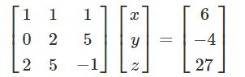

NumPy 線形代数
NumPy は線形代数関数ライブラリを提供しますlinalgこのライブラリには線形代数に必要なすべての機能が含まれています。以下の説明を参照してください：
| 関数 | 説明 |
|---|---|
dot |
二つの配列のドット積、すなわち対応する要素の積。 |
vdot |
二つのベクトルのドット積 |
inner |
二つの配列の内積 |
matmul |
二つの配列の行列積 |
determinant |
配列の行列式 |
solve |
線形行列方程式を解く |
inv |
行列の乗法逆行列を計算する |
numpy.dot()
numpy.dot() は、2つの1次元配列の場合、これらの2つの配列の対応するインデックスの要素の積の和（数学的にはベクトルのドット積と呼ばれる）を計算します。2次元配列の場合は、2つの配列の行列積を計算します。多次元配列の場合、その一般的な計算式は次のとおりです。つまり、結果の配列の各要素は、配列aの最後の次元のすべての要素と配列bの最後から2番目の次元のすべての要素の積の和です：dot(a, b)[i,j,k,m] = sum(a[i,j,:] * b[k,:,m])。
numpy.dot(a, b, out=None)
パラメータの説明：
- a: ndarray 配列
- b: ndarray 配列
- out: ndarray, オプション、dot()の計算結果を保存するために使用します
例
出力結果は：
[[37 40] [85 92]]
計算式は：
[[1*11+2*13, 1*12+2*14],[3*11+4*13, 3*12+4*14]]
numpy.vdot()
numpy.vdot() 関数は2つのベクトルのドット積です。最初の引数が複素数の場合、その共役複素数が計算に使用されます。引数が多次元配列の場合、1次元に展開されます。
例
出力結果は：
130
計算式は：
1*11 + 2*12 + 3*13 + 4*14 = 130
numpy.inner()
numpy.inner() 関数は1次元配列のベクトル内積を返します。より高次元の場合、最後の軸に沿った積の和を返します。
例
出力結果は：
2
多次元配列の例
出力結果は：
数组 a： [[1 2] [3 4]] 数组 b： [[11 12] [13 14]] 内积： [[35 41] [81 95]] 数组 a： [[1 2] [3 4]] 数组 b： [[11 12] [13 14]] 内积： [[35 41] [81 95]]
内積の計算式は：
1*11+2*12, 1*13+2*14 3*11+4*12, 3*13+4*14
numpy.matmul
numpy.matmul 関数は2つの配列の行列積を返します。2次元配列の通常の積を返しますが、いずれかの引数の次元が2より大きい場合は、最後の2つのインデックスに存在する行列のスタックとして扱われ、それに応じてブロードキャストされます。
一方、いずれかの引数が1次元配列の場合、その次元に1を追加することで行列に昇格させ、乗算の後に取り除かれます。
2次元配列の場合、それは行列乗算です：
例
出力結果は：
[[4 1] [2 2]]
2次元と1次元の演算：
例
出力結果は：
[1 2] [1 2]
次元が2より大きい配列：
例
出力結果は：
[[[ 2 3] [ 6 11]] [[10 19] [14 27]]]
numpy.linalg.det()
numpy.linalg.det() 関数は入力行列の行列式を計算します。
行列式は線形代数において非常に有用な値です。正方行列の対角要素から計算されます。2×2行列の場合、左上と右下の要素の積と、他の2つの要素の積の差です。
言い換えると、行列[[a, b], [c, d]]の場合、行列式は ad-bc として計算されます。より大きな正方行列は2×2行列の組み合わせと見なされます。
例
出力結果は：
-2.0
例
出力結果は：
[[ 6 1 1] [ 4 -2 5] [ 2 8 7]] -306.0 -306
numpy.linalg.solve()
numpy.linalg.solve() 関数は行列形式の線形方程式の解を与えます。
次の線形方程式を考えます：
x + y + z = 6 2y + 5z = -4 2x + 5y - z = 27
行列を使って次のように表すことができます：

行列がA、X、Bである場合、方程式は次のようになります：
AX = B 或 X = A^(-1)B
numpy.linalg.inv()
numpy.linalg.inv() 関数は行列の乗法逆行列を計算します。
逆行列（inverse matrix）：Aを数体上のn次正方行列とします。同じ数体上に別のn次正方行列Bが存在して、AB=BA=E を満たす場合、BをAの逆行列と呼び、Aは正則行列（可逆行列）と呼ばれます。注：Eは単位行列です。
例
出力結果は：
[[1 2] [3 4]] [[-2. 1. ] [ 1.5 -0.5]] [[1.0000000e+00 0.0000000e+00] [8.8817842e-16 1.0000000e+00]]
ここで行列Aの逆行列を作成します：
例
出力結果は：
数组 a： [[ 1 1 1] [ 0 2 5] [ 2 5 -1]] a 的逆： [[ 1.28571429 -0.28571429 -0.14285714] [-0.47619048 0.14285714 0.23809524] [ 0.19047619 0.14285714 -0.0952381 ]] 矩阵 b： [[ 6] [-4] [27]] 计算：A^(-1)B： [[ 5.] [ 3.] [-2.]]
結果は次の関数を使用しても取得できます：
x = np.dot(ainv,b)その他の拡張
クリックしてノートを共有
ノートはこの記事の内容の拡張である必要があります！
記事の投稿は、ここをクリックしてください
登録招待コードの取得方法
ノートを共有する前にログインする必要があります！
登録招待コードの取得方法